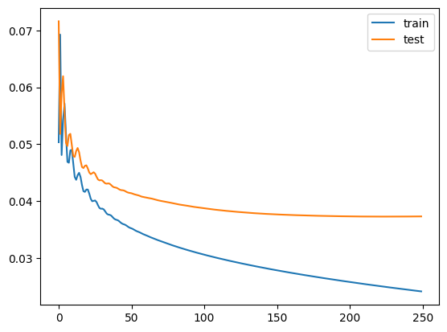
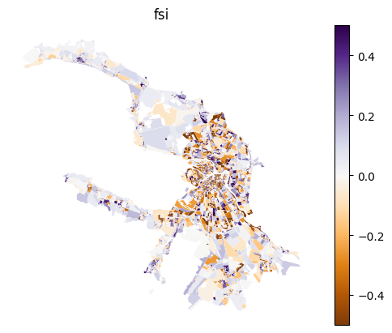
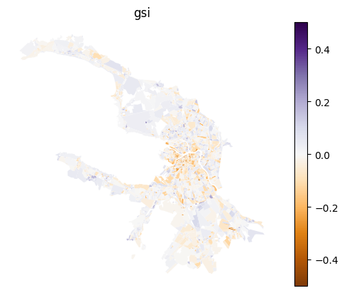
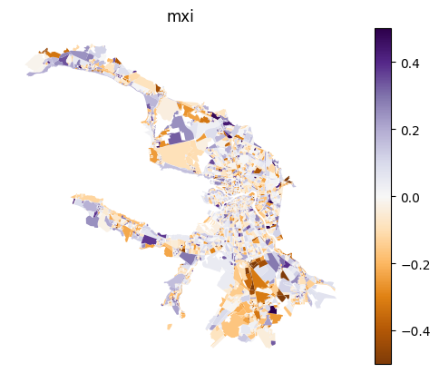
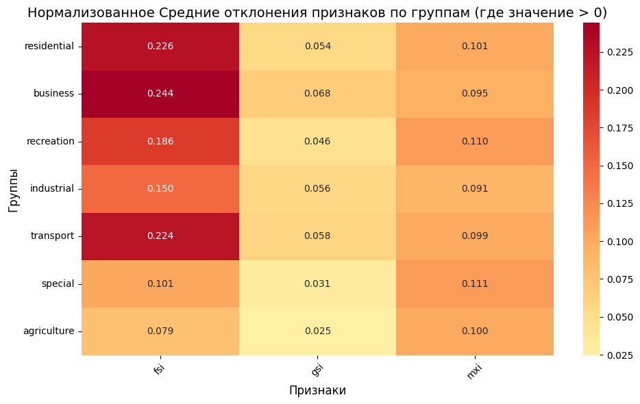

Regression
[1]:
import geopandas as gpd
blocks_gdf = gpd.read_parquet('./blocks.parquet')
Fix columns almost equal 1
[2]:
from blocksnet.enums import LandUse
land_use_columns = [lu.value for lu in LandUse]
blocks_gdf[land_use_columns] = blocks_gdf[land_use_columns].clip(upper=1)
Filter only viable rows
[3]:
blocks_gdf = blocks_gdf[(blocks_gdf[['fsi', 'gsi']] > 0).all(axis=1)]
blocks_gdf = blocks_gdf[(blocks_gdf[['gsi', 'mxi']] <= 1).all(axis=1)]
Initialize graph
[4]:
from blocksnet.relations import generate_adjacency_graph
adjacency_graph = generate_adjacency_graph(blocks_gdf, 10)
2025-04-15 16:22:17.177 | INFO | blocksnet.relations.adjacency.core:_generate_adjacency_nodes:10 - Generating nodes
2025-04-15 16:22:17.182 | INFO | blocksnet.relations.adjacency.core:_generate_adjacency_edges:15 - Generating edges
2025-04-15 16:22:19.058 | SUCCESS | blocksnet.relations.adjacency.core:generate_adjacency_graph:38 - Adjacency graph successfully generated: 5350 nodes, 15279 edges
Density
[5]:
from blocksnet.machine_learning.regression import DensityRegressor
dr = DensityRegressor()
Train
[33]:
data = dr.get_train_data(blocks_gdf, adjacency_graph, fit_scaler=True, test=0.2)
2025-04-15 15:49:33.992 | INFO | blocksnet.preprocessing.feature_engineering.core:_calculate_usual_features:34 - Calculating usual features
2025-04-15 15:49:34.107 | INFO | blocksnet.machine_learning.regression.density.core:_features_from_geometries:46 - Fitting the scaler
[34]:
train_losses, test_losses = dr.train(data, epochs=250, learning_rate=3e-4, weight_decay=0, delta=0.5)
Train loss: 0.02410 | Test loss: 0.03729: 100%|██████████| 250/250 [00:22<00:00, 11.00it/s]
[37]:
import pandas as pd
pd.DataFrame.from_dict({
'train': train_losses,
'test': test_losses,
}).plot()
[37]:
<Axes: >

Test
[38]:
dr.test(data, delta=0.5)
[38]:
0.03729007765650749
Evaluate
[6]:
result_df = dr.evaluate(blocks_gdf, adjacency_graph)
2025-04-15 16:22:29.517 | INFO | blocksnet.preprocessing.feature_engineering.core:_calculate_usual_features:34 - Calculating usual features
[7]:
df = result_df.copy()
for column in df.columns:
df[column] -= blocks_gdf[column]
ax = blocks_gdf[['geometry']].join(df).plot(column, cmap='PuOr', legend=True, vmin=-0.5, vmax=0.5)
ax.set_title(column)
ax.set_axis_off()



[30]:
import pandas as pd
df = result_df.copy()
group_columns = ['residential', 'business', 'recreation', 'industrial', 'transport', 'special', 'agriculture']
diff_columns = df.columns
group_abs_diff_means = {}
for group_col in group_columns:
group_mask = blocks_gdf[group_col] > 0
filtered_blocks = blocks_gdf.loc[group_mask, diff_columns]
filtered_df = df.loc[group_mask, diff_columns]
# Абсолютное отклонение
abs_diff = (filtered_df - filtered_blocks).abs()
group_abs_diff_means[group_col] = abs_diff.mean()
# В виде DataFrame
abs_mean_diffs_df = pd.DataFrame(group_abs_diff_means).T
abs_mean_diffs_df.index.name = 'Group'
[35]:
# Копируем исходную таблицу, чтобы не потерять оригинал
normalized_df = abs_mean_diffs_df.copy()
# Применяем min-max нормализацию по каждому столбцу (признаку)
normalized_df = (normalized_df - normalized_df.min()) / (normalized_df.max() - normalized_df.min())
[37]:
import seaborn as sns
import matplotlib.pyplot as plt
plt.figure(figsize=(10, 6))
sns.heatmap(abs_mean_diffs_df, annot=True, cmap="RdYlGn_r", center=0, fmt=".3f")
plt.title("Нормализованное Средние отклонения признаков по группам (где значение > 0)", fontsize=14)
plt.xlabel("Признаки", fontsize=12)
plt.ylabel("Группы", fontsize=12)
plt.xticks(rotation=45)
plt.yticks(rotation=0)
plt.tight_layout()
plt.show()

Save model and scaler
[8]:
dr.save_model('model.pt')
dr.save_scaler('scaler.pkl')